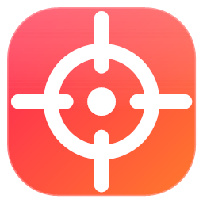
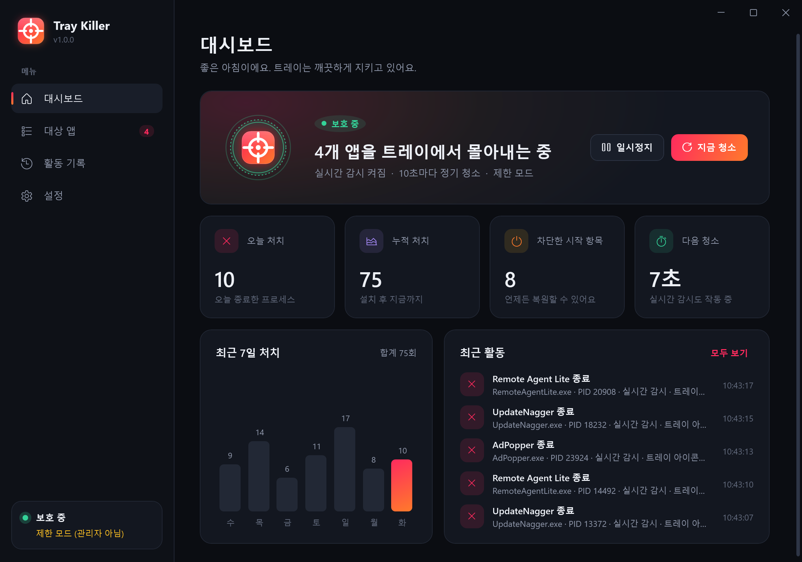
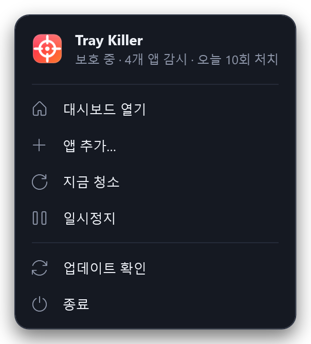
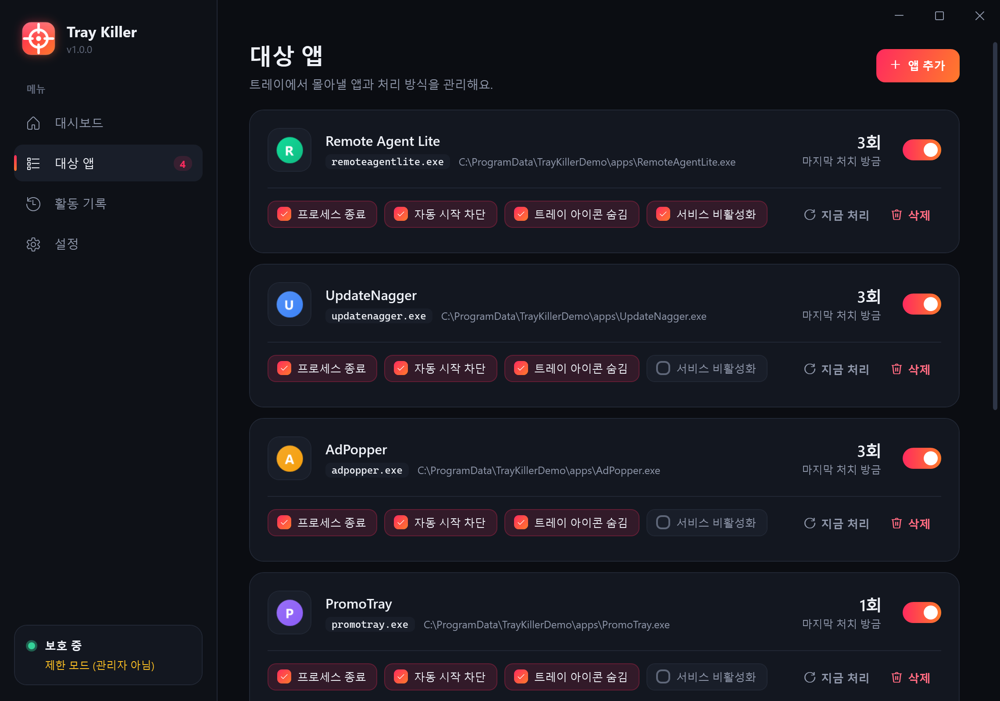
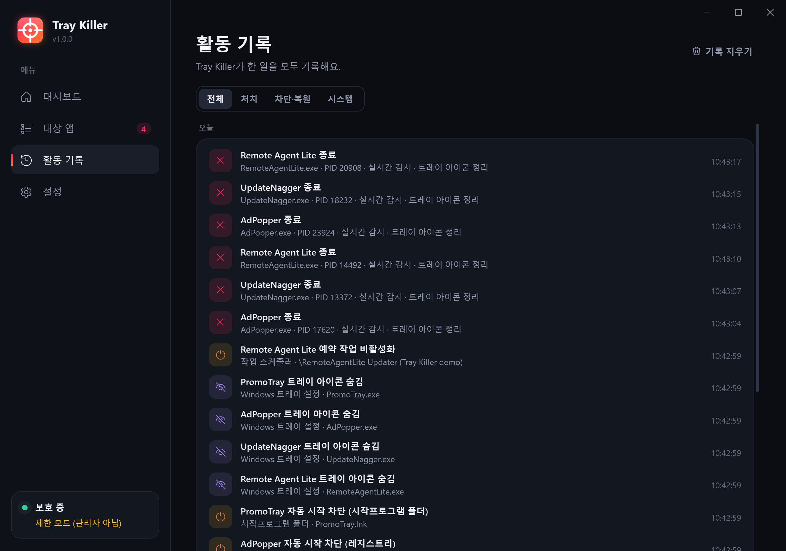
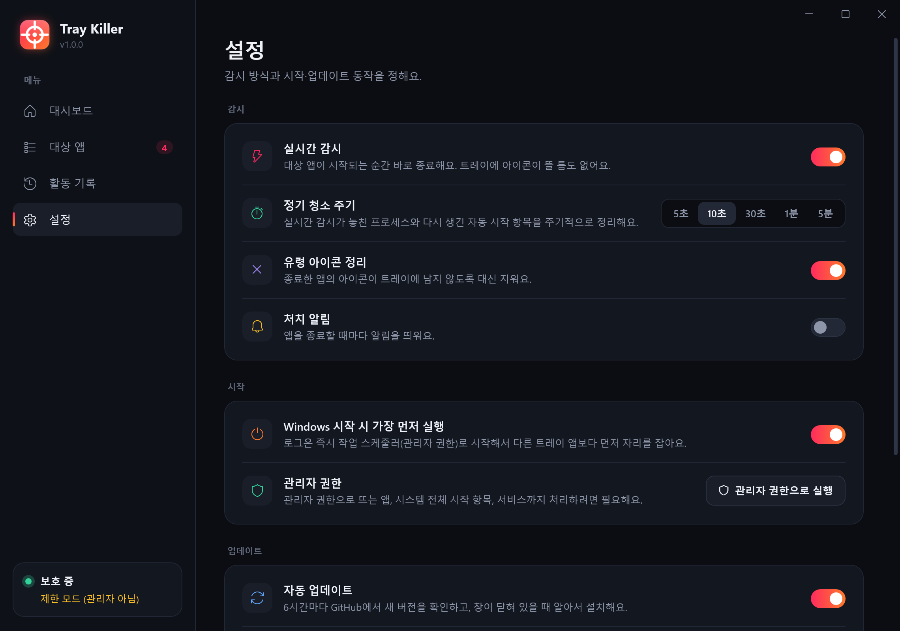
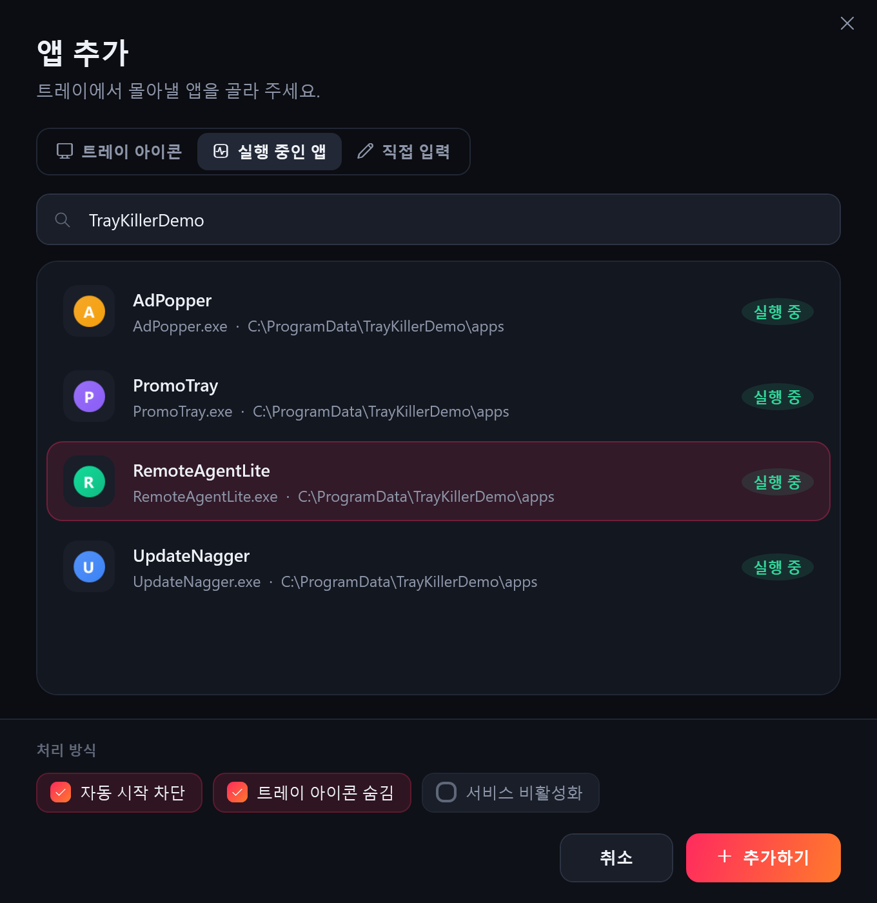

지정한 앱은 켜지는 순간 종료하고, 다시는 자동 시작하지 못하게 막습니다. 남는 유령 아이콘까지 깨끗하게 치우는 Windows 트레이 청소기예요.
Tray Killer closes the apps you pick the moment they start, switches off every way they auto-start, and even wipes the ghost icons they leave behind.


작업 관리자에서 시작 프로그램을 꺼도, 다른 프로그램이 또 실행해요.
Disabled in Task Manager, yet another program launches it again.
종료 메뉴조차 없는 아이콘이 트레이 한 자리를 차지하고 있어요.
An icon with no exit option, squatting in your tray.
강제 종료하면 마우스를 올릴 때까지 빈 아이콘이 남아 있어요.
Force-kill it and an empty icon stays until you hover over it.
커널 프로세스 이벤트로 시작 즉시 감지해서 종료해요. 아이콘이 뜰 틈도 없어요.
Kernel process-start events catch targets instantly — before an icon even appears.
Run·RunOnce, 시작프로그램 폴더, 작업 스케줄러, 서비스까지. 다시 등록되면 또 꺼요.
Run/RunOnce, Startup folders, Task Scheduler and services — and again if re-registered.
종료 직전·직후에 대상 앱의 트레이 아이콘을 대신 지워요(NIM_DELETE).
Removes the target's tray icon on its behalf (NIM_DELETE) right before and after killing it.
관리자 권한 로그온 작업으로 시작해서, 시작 지연이 걸린 다른 트레이 앱보다 앞서요.
An elevated logon task beats every delayed startup app to the tray.
끈 항목은 모두 백업해요. 복원하면 원래대로 돌아가고, 다시 건드리지 않아요.
Everything is backed up. Restore puts it back and leaves it alone.
GitHub Releases에서 새 버전을 받아 SHA-256을 검증한 뒤 스스로 교체해요.
Pulls new versions from GitHub Releases, verifies SHA-256, swaps itself.
UAC에서 “예” 한 번이면 설치와 자동 시작 등록이 끝나요.
One UAC prompt installs it and registers it to start first.
트레이에 떠 있는 앱이나 실행 중인 앱에서 고르거나, 이름을 직접 입력해요.
Choose from your tray icons or running apps, or type a name.
이제 Tray Killer가 알아서 지켜요. 무엇을 했는지는 활동 기록에 남아요.
Tray Killer takes it from here — every action is in the activity log.




explorer.exe·svchost.exe·csrss.exe 등 핵심 프로세스는 와일드카드로도 지정할 수 없어요.Core processes like explorer.exe, svchost.exe, csrss.exe can't be targeted.지정한 실행 파일 이름만 건드리고, Windows 핵심 프로세스는 보호돼요. 자동 시작 항목은 지우지 않고 백업한 뒤 끄기 때문에 언제든 원래대로 돌릴 수 있어요.
It only touches the executable names you choose, and core Windows processes are protected. Startup items are backed up, not deleted, so you can always restore them.
없어도 동작해요(제한 모드). 다만 관리자 권한으로 뜨는 앱, HKLM 시작 항목, 서비스까지 처리하려면 필요해요. 처음에 UAC를 한 번 승인하면 이후에는 작업 스케줄러가 프롬프트 없이 실행해 줘요.
It works without them in limited mode, but elevated apps, HKLM entries and services need them. After one UAC approval, Task Scheduler launches it elevated without prompts.
이 저장소의 GitHub Releases에서만 받고, 함께 올라간 SHA-256 해시가 일치해야 교체해요. 창이 열려 있을 때는 자동으로 교체하지 않고, 설정에서 끌 수도 있어요.
It only downloads from this repo's GitHub Releases and swaps itself only if the published SHA-256 matches. It won't update while the window is open, and you can turn it off.
설정 → 제거, 또는 Windows 설정 → 앱에서 지우면 돼요. 차단했던 항목은 모두 원래대로 복원돼요.
Settings → Uninstall, or Windows Settings → Apps. Everything it blocked is restored.
무료 · 오픈소스(MIT) · Windows 10/11
Free · open source (MIT) · Windows 10/11